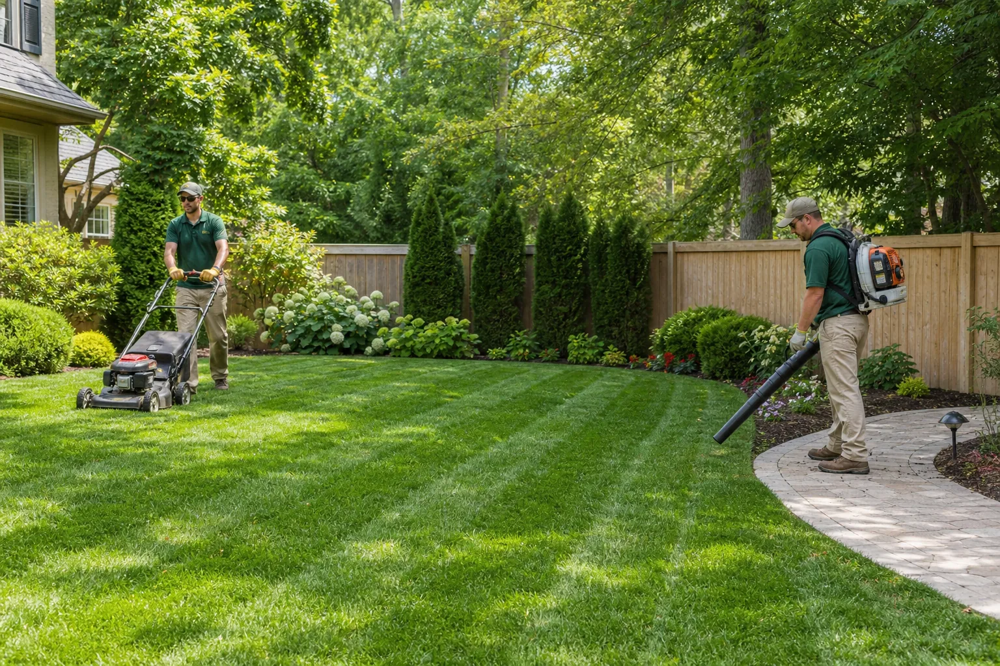
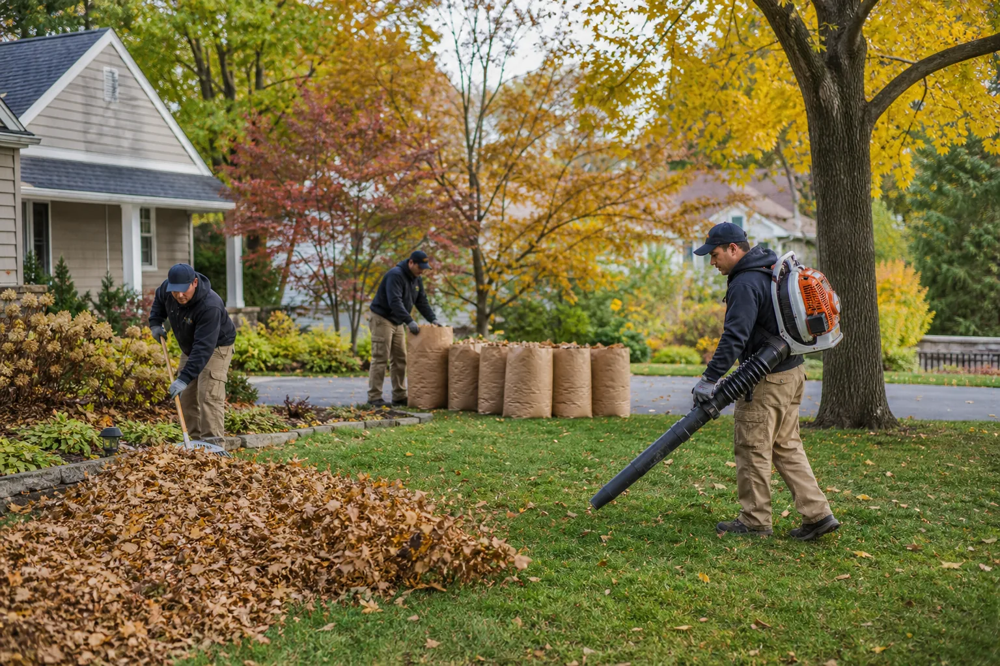
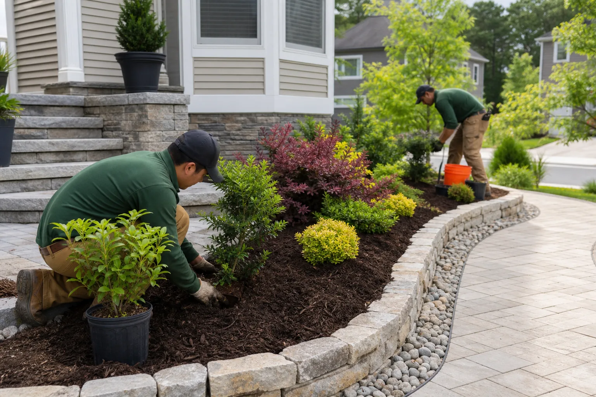
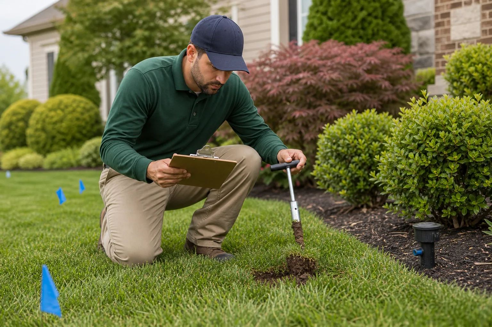

One Request
Share what is happening on your property once, and we route the request toward relevant local providers.
We help homeowners connect with independent local providers for mowing, cleanups, landscaping, irrigation support, turf care, and yard recovery.
Share what is happening on your property once, and we route the request toward relevant local providers.
Get help finding available providers for spring prep, summer upkeep, fall cleanup, and recovery work.
Describe the job, property access, timing, and concerns so providers can respond with the right context.
We focus on connecting homeowners with independent providers familiar with local lawns and seasonal needs.

Healthy outdoor spaces can involve mowing frequency, soil condition, irrigation patterns, drainage, beds, shrubs, weeds, bare areas, and seasonal debris. Finding the right help for those needs can take time.
GreenScape Lawn Care Connect is not the contractor performing the work. We help homeowners submit the request and connect with independent local providers who may be able to help.
Independent providers may offer one-time projects, recurring maintenance, seasonal help, or bundled property care.

For regular upkeep, cleaner edges, turf monitoring, and ongoing property presentation.

For seasonal debris, bare patches, damaged turf, and yards that need a reset.

For planting, bed upgrades, shrub shaping, watering concerns, and support around the lawn.
Homeowners often know what looks wrong before they know which type of local provider to call.
Request help finding providers for overgrown lawns, recurring mowing, edge cleanup, and routine presentation.
Use one request to describe cleanup needs, branch pickup, bed reset, and whether haul-away may be needed.
Connect with providers who may discuss sod repair, soil prep, fertilization, weed pressure, or watering gaps.
Share photos and goals for planting, mulch, bed shaping, shrub work, or practical landscape improvements.
Tell us what you need, and we help route the request toward independent providers who fit the service category and area.
Share the service type, property details, timing, photos if useful, and access notes.
Your request is organized so available local providers can understand the job quickly.
Independent providers may follow up to discuss scope, pricing, schedule, and requirements.
You choose who to hire and confirm licensing, insurance, and suitability before work begins.
GreenScape Lawn Care Connect helps with the connection step. The final hiring decision always belongs to the homeowner, so the conversation with a provider should be specific before work begins.

A clear request helps local providers understand the job before they call, which can reduce back-and-forth and make the first conversation more useful.
The service is designed to make the first step easier while keeping provider choice in the homeowner's hands.
No. GreenScape Lawn Care Connect is a free connection service. Work is discussed and performed by independent providers if you choose to hire one.
No. A request helps organize your needs. Any pricing, schedule, scope, and service agreement should be confirmed directly with the provider.
Yes. Include mowing, cleanup, irrigation, turf repair, shrub care, or landscape needs in the same message so the request can be routed clearly.
Share the service type, approximate property size, timing, access notes, problem areas, and photos if they would help explain the job.